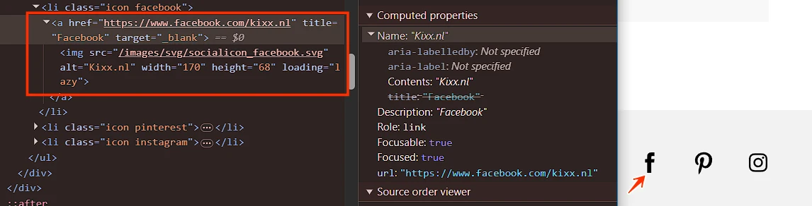
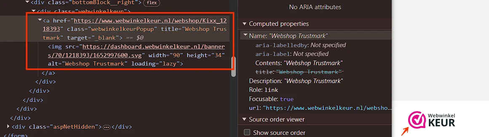
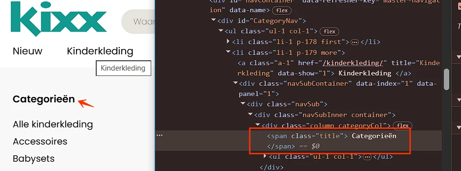
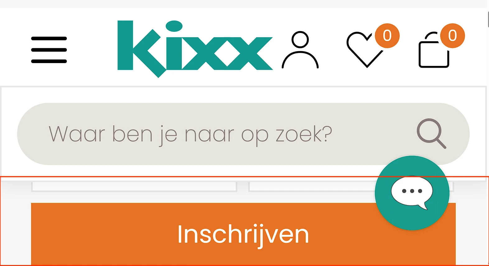

Deze bevindingen staan in onderdelen die op elke pagina van de website terugkomen: de cookiebanner, de header, het hoofdmenu, het mobiele menu en de footer. Tijdens deze hercontrole hebben we ze op de homepagina getoetst.
#1 - De website heeft een sessie-timeout
De website heeft een sessie-timeout, waarna bezoekers moeten bevestigen dat ze een mens zijn. Er is geen mogelijkheid om de sessie te verlengen en er wordt geen waarschuwing gegeven.
Oplossing
Zorg ervoor dat bezoekers de mogelijkheid hebben om deze tijdslimiet uit te zetten, aan te passen of te verlengen.
#2 - Link zonder toegankelijke naam

In de header staan drie onzichtbare links zonder toegankelijke naam.
De link heeft geen toegankelijke naam. Daardoor is voor gebruikers van schermlezers niet duidelijk wat de functie of de bestemming van de link is. Ook is het linkdoel niet vast te stellen op basis van de beschikbare informatie. Dit hangt samen met succescriterium 2.4.4, omdat links een duidelijk doel moeten hebben.
Oplossing
Geef de link een toegankelijke naam. Dit kan bijvoorbeeld via een zichtbare linktekst, een aria-label of een andere geschikte techniek.
#3 - Kleurcontrast van tekst kleiner dan 24px en niet vetgedrukt is onvoldoende

De combinatie van lichtblauw (#00AEAE) en wit wordt gebruikt voor tekst en achtergrond. De contrastverhouding is te laag: 2,7:1. Dit komt voor in de cookiebanner bij de link "Details tonen" en in het mobiele menu, bijvoorbeeld bij links als "Nieuw".
Oplossing
Omdat deze tekst kleiner is dan 24px en niet vetgedrukt, moet het contrast minimaal 4,5:1 zijn.
#4 - Kleurcontrast van tekst kleiner dan 24px en niet vetgedrukt is onvoldoende
Witte tekst staat op een oranje (#E77223) achtergrond of andersom. Dit komt voor in de header, naast de favorieten- en winkelwageniconen, zoals "0", en op de homepagina bij de knop "Inschrijven". De contrastverhouding is te laag: 3,1:1.
Oplossing
Omdat deze tekst kleiner is dan 24px en niet vetgedrukt, moet het contrast minimaal 4,5:1 zijn.
#5 - Cookiebanner: tekstalternatief logo onvolledig
In de cookiebanner toont het logo de volledige tekst "kixx kinderkleding", maar de alt-tekst is alleen "logo".
Hierdoor is de informatie in het logo niet volledig beschikbaar voor bezoekers die de afbeelding niet kunnen waarnemen.
Oplossing
Zorg ervoor dat het tekstalternatief (alt-tekst) van het logo de volledige tekst bevat die in het logo zichtbaar is, namelijk "kixx kinderkleding".
#6 - Cookiebanner: de accordeon heeft geen koppen
In de cookiebanner, onder het tabblad "Details", staan secties met verborgen content. De elementen waarmee je deze secties kunt openen en sluiten zijn niet als kop gemarkeerd.
De teksten waarmee je delen van een accordeon kunt inklappen en uitklappen doen dienst als koppen voor die delen. Daarom moeten deze teksten ook de rol van kop hebben. Het gaat verkeerd als deze teksten niet in de code als kop zijn gemarkeerd met een h-element zoals h2 of h3.
Oplossing
Markeer deze teksten als kop of zorg dat de bestaande rol van kop niet wordt overschreven.
Meer informatie over dit element staat op deze pagina: https://www.w3.org/WAI/ARIA/apg/patterns/accordion/.
#7 - Focusindicator is niet zichtbaar
Op alle pagina's van deze website is de standaard toetsenbordfocusstijl verwijderd van interactieve elementen en zijn er geen aangepaste focusindicatoren als alternatief aangeboden.
De toetsenbordfocus moet altijd zichtbaar zijn op interactieve elementen zoals links, knoppen en invoervelden die met het toetsenbord focus kunnen krijgen. Bezoekers die met het toetsenbord navigeren moeten goed kunnen zien op welke plek van de pagina zij zich bevinden.
Oplossing
Zorg ervoor dat de toetsenbordfocus zichtbaar is op alle interactieve elementen. Op deze pagina staat een instructie om focuszichtbaarheid te testen: https://www.properaccess.nl/blog/hoe-test-ik-focus-zichtbaarheid/.
#8 - Zoekveld: onvoldoende contrast van tekst en het invoerveld
In de header staat een zoekveld. De achtergrondkleur van het veld is lichtgrijs (#E6E4DE) op een witte achtergrond. De contrastverhouding is te laag: 1,3:1.
Dit invoerveld heeft een placeholdertekst "Waar ben je naar op zoek?". De grijze (#877B78) placeholdertekst tegen de lichtgrijze (#E6E4DE) achtergrond heeft een contrastverhouding van 3,2:1, wat ook te laag is.
Oplossing
De achtergrond van invoerveld moet minimaal een contrast van 3,0:1 hebben met de achtergrond van de pagina.
Zorg ervoor dat de placeholdertekst een contrast van minimaal 4,5:1 heeft ten opzichte van de achtergrond.
#9 - Nieuwsbriefformulier: autocomplete-attribuut ontbreekt bij invoervelden voor persoonsgegevens
In de footer staat een formulier met een invoerveld voor persoonlijke informatie (e-mailadres) zonder het autocomplete-attribuut.
Invoervelden voor persoonlijke informatie, zoals achternaam, e-mailadres of telefoonnummer, moeten het autocomplete-attribuut bevatten. Dit stelt browsers en hulpsoftware in staat om gebruikers te ondersteunen, bijvoorbeeld door relevante velden automatisch in te vullen.
Oplossing
Gebruik het autocomplete-attribuut voor alle velden waarin persoonsgegevens moeten worden ingevuld. Meer informatie over autocomplete en welke waarden je verplicht moet gebruiken: https://www.w3.org/Translations/WCAG22-nl/#input-purposes.
#10 - Nieuwsbriefformulier: onvoldoende kleurcontrast van tekst
In de footer staat een formulier met een invoerveld "E-mailadres". Wanneer een leeg formulier wordt verzonden, verschijnt een foutmelding met rode (#E6575A) tekst op een lichtrode (#FFDEDD) achtergrond, bijvoorbeeld "Het veld 'e-mailadres' is een verplicht veld. Vul dit veld alsnog in". De contrastverhouding is te laag: 2,9:1.
Oplossing
Omdat deze tekst kleiner is dan 24px en niet vetgedrukt, moet het contrast minimaal 4,5:1 zijn.
#11 - Nieuwsbriefformulier: onvoldoende kleurcontrast van informatieve elementen
In de footer staat een e-mailveld met een asterisk. De oranje (#ED8037) asterisk heeft onvoldoende kleurcontrast ten opzichte van de witte veldachtergrond: 2,7:1. Dit is lager dan de vereiste 3,0:1 voor grafische elementen die informatie overbrengen.
Het kleurcontrast van informatieve elementen moet minimaal 3,0:1 zijn.
Oplossing
Zorg dat deze informatieve elementen voldoende contrast hebben.
#12 - Footer: alternatieve tekst van informatieve afbeelding is niet betekenisvol

In de footer staan logo's van sociale media die als link functioneren, maar deze logo's hebben allemaal dezelfde niet-beschrijvende alt-tekst "Kixx.nl" en daardoor dezelfde toegankelijke linknaam. Het doel van de links is onduidelijk (2.4.4).
Er is geprobeerd om de links toegankelijk te maken door een title-attribuut toe te voegen, bijvoorbeeld "Facebook", maar dit is een onbetrouwbare methode en niet alle schermlezers lezen de inhoud ervan voor.
Wanneer een afbeelding informatie overbrengt, moet de alternatieve tekst die informatie volledig en betekenisvol beschrijven. In dit geval wordt de visueel aangeboden informatie niet overgebracht aan gebruikers van schermlezers.
Oplossing
De beste oplossing is om de alt-tekst aan te passen, bijvoorbeeld naar "Volg ons op Facebook" enzovoort.
#13 - Footer: kop niet gemarkeerd als kop
In de footer zijn de volgende teksten niet als kop gemarkeerd: "Klantenservice", "Kixx" en andere.
Voor bezoekers die hulpsoftware gebruiken, is tekst die visueel als kop is vormgegeven maar niet als kop is gemarkeerd in de code niet bruikbaar. Deze bezoekers navigeren via koppen om de inhoud te scannen of snel naar een specifieke sectie te gaan. Dit is alleen mogelijk wanneer koppen ook in de code als kop zijn vastgelegd. Wanneer koppen uitsluitend visueel zijn vormgegeven, bijvoorbeeld door vetgedrukte tekst, wijkt de informatiestructuur in de code af van de visuele structuur van de pagina.
Oplossing
Markeer koppen met het juiste HTML-element en gebruik daarbij het correcte kopniveau (h1 tot en met h6).
#14 - Footer: tekstalternatief logo onvolledig

In de footer staat een logo dat als link functioneert met de zichtbare tekst "Webwinkel KEUR", maar de alt-tekst is "Webshop Trustmark".
Hierdoor is de informatie in het logo niet volledig beschikbaar voor bezoekers die de afbeelding niet kunnen waarnemen.
De toegankelijke naam van de link komt daarmee niet overeen met de zichtbare tekst in het logo (2.5.3). Daardoor kan de link niet correct worden geactiveerd met spraakbediening, omdat bezoekers de zichtbare tekst uitspreken terwijl de toegankelijke naam afwijkt.
Oplossing
Zorg ervoor dat het tekstalternatief (alt-tekst) van het logo de volledige tekst bevat die in het logo zichtbaar is, namelijk "Webwinkel KEUR".
Zorg ervoor dat de zichtbare tekst van de link voorkomt in de toegankelijke naam, bij voorkeur aan het begin.
#15 - Footer: onjuiste taal van toegankelijke namen
In de footer staat een logo met de tekst "Webwinkel KEUR" dat als link functioneert. De alt-tekst van het logo en de toegankelijke naam van de link, "Webshop Trustmark", is in het Engels.
Schermlezers lezen deze labels voor volgens de uitspraakregels van de primaire taal van de pagina, in dit geval Nederlands. Daardoor kan dit leiden tot verwarring en verminderde begrijpelijkheid voor gebruikers die schermlezers gebruiken.
Oplossing
Voeg een lokaal lang-attribuut toe. Een betere oplossing is het vertalen deze tekst naar het Nederlands, zodat schermlezers de tekst correct kunnen voorlezen.
#16 - Herhalende content niet te omzeilen
Op alle pagina's ontbreekt een oplossing om blokken herhalende content in de header over te slaan. Er is geen skiplink.
Daardoor moeten gebruikers van een schermlezer bij elk paginabezoek dezelfde terugkerende onderdelen doorlopen voordat zij de hoofdinhoud bereiken.
Oplossing
Zorg ervoor dat gebruikers vaste onderdelen van de pagina kunnen overslaan en direct naar de hoofdinhoud kunnen gaan. De beste oplossing is een skiplink
- Een skiplink die bij gebruik de toetsenbordfocus naar de hoofdinhoud verplaatst; het duidelijk afbakenen van paginadelen, zoals navigatie en hoofdinhoud; een consistente en correcte koppenstructuur die op elke pagina wordt toegepast.
- Een skiplink moet de eerste link op de pagina zijn. Deze mag standaard verborgen zijn, maar moet zichtbaar worden zodra de skiplink toetsenbordfocus krijgt.
#17 - Hoofdmenu: onzichtbaar element krijgt toetsenbordfocus
De toetsenbordfocus komt terecht op onzichtbare interactieve elementen na de hoofdmenulink "Boutique".
De toetsenbordfocus mag echter niet terechtkomen op onzichtbare interactieve elementen . Als dat wel gebeurt, kan een bezoeker deze onbedoeld activeren en raakt de navigatie onvoorspelbaar.
Oplossing
Zorg ervoor dat alleen zichtbare elementen toetsenbordfocus kunnen krijgen en dat de focusvolgorde logisch en voorspelbaar blijft.
#18 - Hoofdmenu: informatie is niet meer leesbaar als tekstafstand wordt aangepast

Op deze pagina wordt de tekst in de header gedeeltelijk onzichtbaar en onleesbaar wanneer bezoekers de tekstafstand aanpassen zoals beschreven in dit succescriterium, bijvoorbeeld "9 van 10 op Webwinkelkeur" en andere teksten.
Sommige bezoekers passen de weergave van de tekst aan, zodat zij de tekst beter kunnen lezen. Denk aan het vergroten van de afstand tussen regels, letters of woorden. Het gaat bijvoorbeeld om mensen met dyslexie. Als een bezoeker dit doet op de manier die in succescriterium 1.4.12 is beschreven, moet alles goed blijven werken. Bovendien moet de tekst leesbaar blijven.
Oplossing
Je lost dit op door de hoogte en breedte van de containers van de tekst responsief te maken.
#19 - Hoofdmenu: onvoldoende linktekst om de bestemming van de link te kunnen bepalen
In de header staan vier links met iconen. De links met de "Like"- en "Winkelwagen"-iconen hebben als toegankelijke naam "0", wat het doel van de link niet beschrijft.
Er is geprobeerd om de links toegankelijk te maken door een title-attribuut toe te voegen, maar dit is een onbetrouwbare methode en niet alle schermlezers lezen de inhoud ervan voor.
<a title="Favorieten" class="header__icon favorites" href="/mijn-account/favorieten.html">
<span class="favorites-counter logged-out">0</span>
</a>
Oplossing
Gebruik een andere, betrouwbaardere methode, bijvoorbeeld het aria-label-attribuut.
#20 - Hoofdmenu: hover-content niet sluitbaar
Als bezoekers met de muis over een menu-item bewegen, zoals "Kinderkleding", verschijnt er een submenu dat de pagina-inhoud overlapt. Bezoekers moeten deze extra content makkelijk kunnen sluiten zonder de muis te verplaatsen of de focus te verplaatsen, bijvoorbeeld door op Escape te drukken. Zonder deze mogelijkheid kan de extra content de onderliggende pagina-inhoud blokkeren, wat vooral vervelend is voor bezoekers die een vergroot scherm gebruiken.
Oplossing
De extra content (submenu) moet sluitbaar zijn zonder dat de muis of de toetsenbordfocus verplaatst hoeft te worden, bijvoorbeeld via de Escape-toets.
Pseudocodeplan (JavaScript):
Selecteer alle menu-items met submenu's ([aria-haspopup="true"] of .has-submenu). Voeg event listeners toe: focus → open submenu; blur → optioneel sluiten na korte vertraging; keydown → als Escape wordt gedrukt → sluit submenu. Sluit submenu-functie: verwijder .open-class of zet aria-expanded="false"; verberg submenu (display: none of hidden); zet focus terug naar het parent menu-item.
#21 - Hovercontent ontoegankelijk
Als bezoekers met de muis over een menu-item bewegen, zoals "Kinderkleding", verschijnt er een submenu. Deze interactie is niet beschikbaar via het toetsenbord.
Oplossing
Dit is slechts een advies omdat alle informatie uit de submenu's op de pagina's aanwezig is waar de submenu's naar verwijzen. Je maakt de website toegankelijker en gebruiksvriendelijker voor iedereen als je het mogelijk maakt om de submenu's met het toetsenbord bedienbaar te maken. Dezelfde functionaliteit moet beschikbaar zijn zonder muis.
Belangrijk: wanneer je de submenu's toegankelijk maakt via het toetsenbord, moet je de aanwezigheid van deze submenu's bekendmaken aan hulpsoftware.
Als er een element is dat extra content kan tonen of verbergen, dan moet hulpsoftware de staat van deze content (zichtbaar of verborgen) kunnen bepalen. Deze informatie ontbreekt.
Gebruik het aria-expanded-attribuut op de link die extra content opent.
#22 - Hoofdmenu: kop niet gemarkeerd als kop

De hoofdmenulinks, zoals "Kinderkleding", openen submenu's. In deze submenu's zijn de volgende teksten niet als kop gemarkeerd: "Categorieën", "Trending" en andere.
Voor bezoekers die hulpsoftware gebruiken, is tekst die visueel als kop is vormgegeven maar niet als kop is gemarkeerd in de code niet bruikbaar. Deze bezoekers navigeren via koppen om de inhoud te scannen of snel naar een specifieke sectie te gaan. Dit is alleen mogelijk wanneer koppen ook in de code als kop zijn vastgelegd. Wanneer koppen uitsluitend visueel zijn vormgegeven, bijvoorbeeld door vetgedrukte tekst, wijkt de informatiestructuur in de code af van de visuele structuur van de pagina.
Oplossing
Markeer koppen met het juiste HTML-element en gebruik daarbij het correcte kopniveau (h2 tot en met h6).
#23 - Mobiel menu: status menuknop ontbreekt
Op een klein scherm verschijnt een menuknop om het mobiele navigatiemenu te openen. De knop geeft geen informatie over de status van het menu (open of gesloten) aan bezoekers die het niet kunnen zien, zoals gebruikers van schermlezers.
Dit kan bijvoorbeeld opgelost worden door een tekstuele uitleg (ingeklapt/uitgeklapt) toe te voegen die voor ziende bezoekers met CSS wordt verborgen. Een andere optie is om het aria-expanded-attribuut te gebruiken op de menuknop. Dit attribuut moet de waarde "true" krijgen als het menu getoond wordt, en "false" als het menu verborgen is.
Oplossing
Zorg ervoor dat de status van het menu ook in de code beschikbaar is. Gebruik hiervoor bijvoorbeeld het aria-expanded-attribuut op de menuknop. Zet dit attribuut op "true" wanneer het menu is geopend en op "false" wanneer het menu is gesloten.
#24 - Mobiel menu: functie link onduidelijk
Op kleine schermen bevat het geopende mobiele menu een link met een "x"-icoon. Dit icoon heeft geen tekstalternatief. Wanneer een link alleen uit een afbeelding bestaat, moet de alternatieve tekst van de afbeelding de functie van de link beschrijven.
Dit hangt ook samen met succescriterium 4.1.2, omdat de link geen toegankelijke naam heeft.
Oplossing
Voeg een tekstalternatief toe dat de functie van de link beschrijft. Dit kan door een tekstalternatief bij het icoon te gebruiken of door een aria-label toe te voegen aan de link.
#25 - Mobiel menu: focusvolgorde submenu is onjuist
Bij het inzoomen verschijnt in de header een menuknop die het mobiele menu opent. De toetsenbordfocus gaat eerst naar andere elementen voordat de submenu-items worden bereikt. Dit is geen logische focusvolgorde. De toetsenbordfocus moet direct naar het submenu gaan. Hierdoor komt de toetsenbordfocus terecht op onzichtbare elementen.
Daarnaast kunnen bezoekers momenteel met het toetsenbord uit het mobiele menu navigeren. De toetsenbordfocus verschuift dan naar de onderliggende pagina terwijl het menu open blijft.
Bij dit soort menu's moet de toetsenbordfocus goed worden ingesteld. Wanneer het menu actief is, moet de focus binnen het menu blijven en mag deze niet op de onderliggende pagina terechtkomen. Dit kan worden opgelost door de focus binnen het menu te houden, totdat de bezoeker op de sluitknop heeft geklikt of op de ESC-toets heeft gedrukt. Het is ook mogelijk om het menu automatisch te sluiten zodra de toetsenbordfocus eruit gaat.
Oplossing
Zorg ervoor dat de toetsenbordfocus direct naar de submenu-items verplaatst op het moment dat een submenu wordt geopend.
Zorg ervoor dat de toetsenbordfocus binnen het mobiele menu blijft zolang het menu geopend is. Dit kan bijvoorbeeld door:
de focus binnen het menu te houden totdat het menu wordt gesloten (via een sluitknop of de ESC-toets); het menu automatisch te sluiten wanneer de toetsenbordfocus het menu verlaat.
#26 - Mobiel menu: elementen die toetsenbordfocus krijgen zijn bedekt door een mobiel menu
Op een klein scherm, in de header, staat een knop met drie horizontale lijnen waarmee een zijmenu wordt geopend. Wanneer dit menu is geopend, bedekt het menu de interactieve elementen op de onderliggende pagina. Deze elementen kunnen nog steeds toetsenbordfocus krijgen, terwijl ze niet zichtbaar zijn. Elementen die toetsenbordfocus krijgen, moeten altijd zichtbaar zijn, omdat dit anders verwarrend kan zijn voor bezoekers die met het toetsenbord navigeren.
Oplossing
Zorg ervoor dat de toetsenbordfocus binnen het menu blijft totdat het menu wordt gesloten via de sluitknop of door het indrukken van de ESC-toets. Een andere mogelijkheid is dat het menu automatisch sluit zodra de focus het menu verlaat. Onderliggende interactieve elementen mogen geen toetsenbordfocus krijgen zolang het menu is geopend.
#27 - Elementen die toetsenbordfocus krijgen zijn bedekt

Wanneer de website wordt verkleind naar een lagere resolutie, bedekt een sticky header een deel van de pagina-inhoud. Interactieve elementen zoals links in de footer "Contact" krijgen nog steeds toetsenbordfocus, maar de focusindicator is verborgen achter de sticky header.
Hierdoor kunnen bezoekers die met het toetsenbord navigeren niet zien waar de toetsenbordfocus zich bevindt.
Oplossing
Zorg ervoor dat de sticky header of footer geen interactieve elementen of hun focusindicatoren bedekt. Je kunt hiervoor bijvoorbeeld de z-index aanpassen, elementen herpositioneren of de header/footer dynamisch verkleinen op kleinere schermen.
#28 - Hoofdmenu: decoratieve afbeelding is niet verborgen voor schermlezers
Hoofdmenulinks zoals "Kinderkleding", "Meisjes" en andere openen submenu's. Deze submenu's bevatten decoratieve afbeeldingen met de alt-tekst "Banner".
<img alt="Banner" class="landscape banner__image" width="485" height="330" src="<https://www.kixx.nl/img/banner_485x330_229513.webp"> />
Een decoratieve afbeelding geeft geen extra informatie en moet daarom verborgen worden voor schermlezers.
Oplossing
Je kunt dit op verschillende manieren bereiken:
- Voor
img-elementen gebruik je een leegalt-attribuut:alt="". - Met
aria-hidden="true"kun je decoratieve afbeeldingen verbergen voor schermlezers.